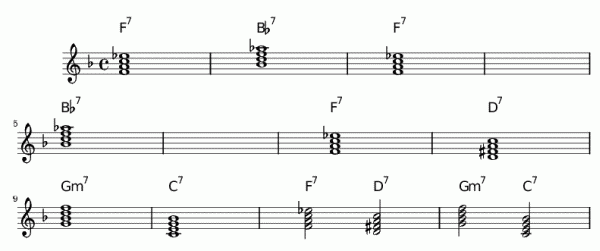

El blues (cuyo significado es melancolía o tristeza) es un género musical vocal e instrumental, basado en la utilización de notas de blues y de un patrón repetitivo, que suele seguir una estructura de doce compases. Originario de las comunidades afroamericanas de Estados Unidos, se desarrolló a través de las espirituales, canciones de oración, canciones de trabajo, rimas inglesas, baladas escocesas e irlandesas narradas y gritos de campo. La utilización de las notas del blues y la importancia de los patrones de llamada y respuesta, tanto en la música como en las letras, son indicativos de la herencia africana-occidental de este género. Un rasgo característico del blues es el uso extensivo de las técnicas "expresivas" de la guitarra (bend, vibrato, slide) y de la armónica (cross harp), que posteriormente influirían en solos de estilos como el rock. El blues influyó en la música popular estadounidense y occidental en general, llegando a formar parte de géneros musicales como el ragtime, jazz, bluegrass, rhythm and blues, rock and roll, funk, heavy metal, hip-hop, música country y canciones pop.
Caracteristicas
- Género basado en una narracion vocal - solista
- Letras con transfondo triste
- La guitarra es el intrumento predominante haciendo uso del slide, vibrato y bending
- Su estructura habitual se basa en doce compases y tres acordes que se repiten a lo largo de la composición.
La forma original de las letras de blues consistió, probablemente, en una única línea repetida tres veces. Más adelante, la estructura actual, basada en una única repetición de una línea seguida por una línea final, se convirtió en estándar.
